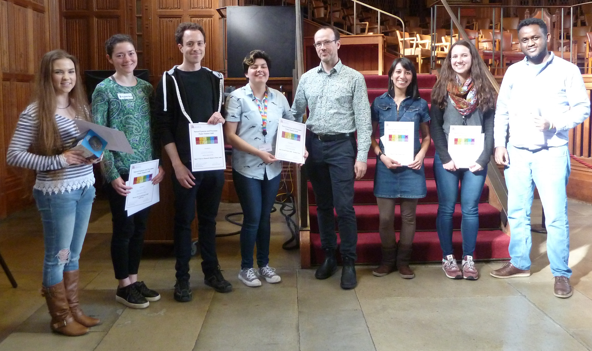

Natural Systems and Processes Poster Session 2018
Year PrizesResearch Masters and 1st Year Prize - Enrico Werner (Aerospace Engineering)
2nd Year Prize - Tesfaye Tessema (Earth Sciences)
3rd/4th Year Prize - Iskra Mejia-Estrada (Geography)
Staff VoteFirst Prize - Sophie Brown (Chemistry)
Runner Up - Angharad Stell (Chemistry)
Student VoteFirst Prize - Yasmeen Erritouni (Earth Sciences)
Runner Up - Hannah Buckland (Earth Sciences)
Winners NSPPS 2018 with Rich Pancost, Director Cabot Institute
Natural Systems and Processes Poster Session 2017
Year PrizesResearch Masters and 1st Year Prize - Jacob Wood (Earth Sciences)
2nd Year Prize - Frances Boreham (Earth Sciences)
3rd Year Prize - Thomas Turpin-Jelfs (Geography)
Staff VoteFirst Prize - Iskra Mejia-Estrada (Geography)
Runner Up - Michaela Reay (Chemistry)
Student VoteFirst Prize - Irving Munguia (Earth Sciences)
Runner Up - Molly Williams (Earth Sciences)
Natural Systems and Processes Poster Session 2016
Year PrizesResearch Masters and 1st Year Prize - Lilias Hopkinson (Earth Sciences)
2nd Year Prize - Pradeep Bhaskar, Armin Elsler, David Altoft (Physics, Earth Sciences, Chemistry)
3rd Year Prize - Kimberley Pyle (Earth Sciences)
Staff VoteFirst Prize - Catherine McIntyre (Chemistry)
Runner Up - Ryan Lloyd (Earth Sciences)
Student VoteFirst Prize - Erik Mackie (Geography)
Runner Up - Emily White (Chemistry)
Natural Systems and Processes Poster Session 2015
Year Prizes1st Year Prize - Fanny Sarrazin (Civil Engineering)
2nd Year Prize - Natalie Lord (Geographical Sciences)
3rd Year Prize - Tom Stubbs (Earth Sciences)
Staff VoteFirst Prize - Alan Kennedy (Geographical Sciences)
Runner Up - James Crosby (Geographical Sciences)
Student VoteFirst Prize - Paul Jarvis (Earth Sciences)
Runner Up - Rose Willoughby (Chemistry)
Natural Systems and Processes Poster Session 2014
Year Prizes1st Year Prize - Dagmara Miernecka (Chemistry) - The Milking Revolution in Temperate Neolithic Europe An Organic Residue Approach
2nd Year Prize - Valentina Noacco (Civil Engineering) - Impact of land use change on dissolved organic carbon in the River Thames over a 130 year time period
3rd Year Prize - Tom Stubbs (Earth Sciences) - The adaptive radiation of Triassic marine reptiles
Committee Prize - Laszlo Talas (Biological Sciences)- Tiger stripe, turtleshell, bunnycam: camouflage patterns around the world
Staff VoteFirst Prize - Mathieu Depoorter (Geographical Sciences) - What is the fate of Antarctic ice?
Runner Up - Abigail Coveney (Bristol Centre for Functional Nanomaterials) Positron Annihilation – A Probe for Sub-Nanoscale Porosity in Natural Materials
Student VoteFirst Prize - T Davies-Barnard (Geographical Sciences) - Different temperature sensitivities to land use change in the RCPs
Runner Up - Alice Marzocchi (Geographical Sciences) - High resolution model-data comparison and orbital forcing in the Mediterranean Sea
Natural Systems and Processes Poster Session 2013
Year PrizesMasters student - Arianna Soldati (Earth Sciences) - Bubble rise and break-up in volcanic conduits
1st year PhD student - Alice Charteris (Chemistry) - Tracing nitrate sources and pathways for reducing contamination of groundwater drinking water sources
2nd year PhD student - Frances Cartwright (Biological Sciences) - Can crops combat climate change?
3rd+ year PhD student - Tomi Nissinen (Chemistry) - Gypsum on cellulose - Nucleation and growth of gypsum on cellulose fibres: optimisation of interfacial assembly and adhesion
Staff VoteWinner - Nancy Jones (Geographical Sciences) - Modelling coral reefs in a changing climate
Runner Up - Stephan Lautenschlager (Earth Sciences) - The digital buzzard - virtual dissection using CT scanning and Lugol's solution
Student VoteWinner - David Wilby (Biological Sciences) - Vision in the quantum world
Runner Up - Sally Wood (Geographical Sciences) - Coral reef connectivity and climate change
Natural Systems and Processes Poster Session 2012
Student VoteBest Poster: Stephan Lautenschlager
Cranial Myology of Erlikosaurus andrewsi Visualised in Three Dimensions
Runner Up: Susan Little
The Isotopic Mass Balance of Zinc in the Oceans
Staff Vote
Best Poster: Susan Little
The Isotopic Mass Balance of Zinc in the Oceans
Runner Up: Jessica McLachlan
Begging for Complexity?
Best Oral Poster Presentation
1st Prize:Anna Davies
Behavioural and Physiological Indicators of Motivation during Animal Decision-Making
Runner Up: Broderick Coburn
Venus Flytrap - A Bistable Orthotropic Shell Structure
Year Prizes
Research Masters: Jamie MacLaren
Supersized Shape-Shifters: Morphological Disparity of Dinosaur Jaws
1st Year: Taraka Davies-Barnard
Climate Cooling and Yield Increase from Natural Variations in Wheat Reflectance
2nd Year: Katy Orford
Engineering Biodiversity: The Implications of Grassland Management on Pollinator Communities
3rd + Year: Paul Hope
An Entrained Circadian Cycle of Peak Activity in a Population of Hibernating Bats

Natural Systems and Processes Poster Session 2011
Student VoteBest Poster: Irene Voellmy
Runners Up: Camilla Sharkey and Sally Wood
Staff Vote
Best Poster: Irene Voellmy
Runners Up: Duncan Hamilton and Sally Wood
Most Memorable Poster
Irene Voellmy
Geo Poster Session 2010
Staff Award: Liz StephensCalibration of flood inundation models using remotely sensed imagery
Geography Students Award: Ben Buse
Dynamics of kimberlite pipe formation: insights from the BK9 kimberlite (Orapa, Botswana)
Earth Science Students Award: Emily Lawson
Determination of Trace Organic Carbon in Subglacial Systems by Ion Chromatography (IC) and Spectrofluorimetry
Most Memorable Poster: Jen Bright
Strain accomodation in the zygomatic arch of the pig (Sus scrofa) in vitro and in silico